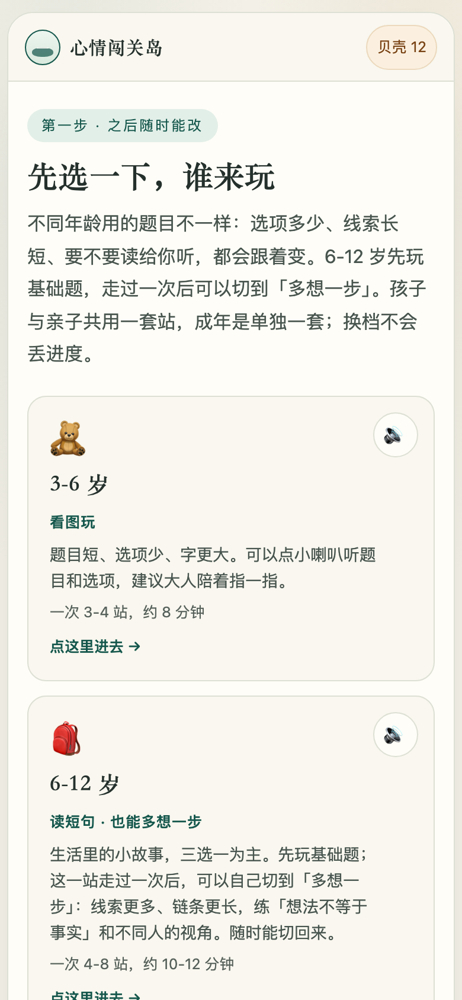
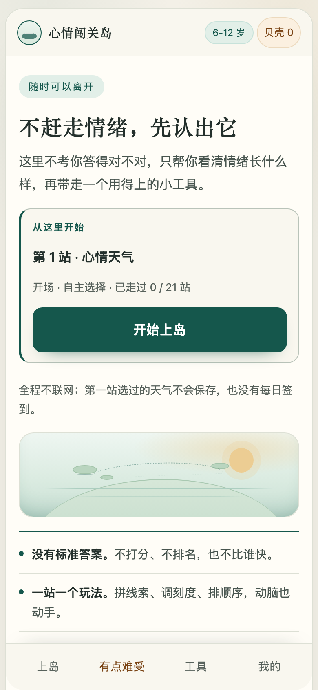
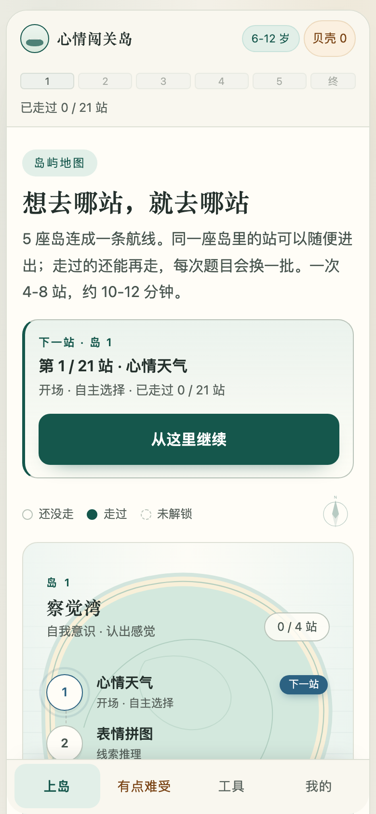
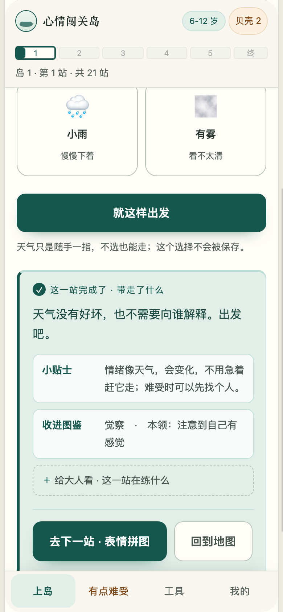
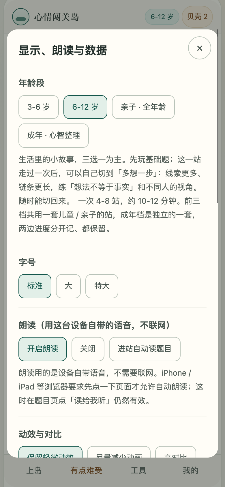
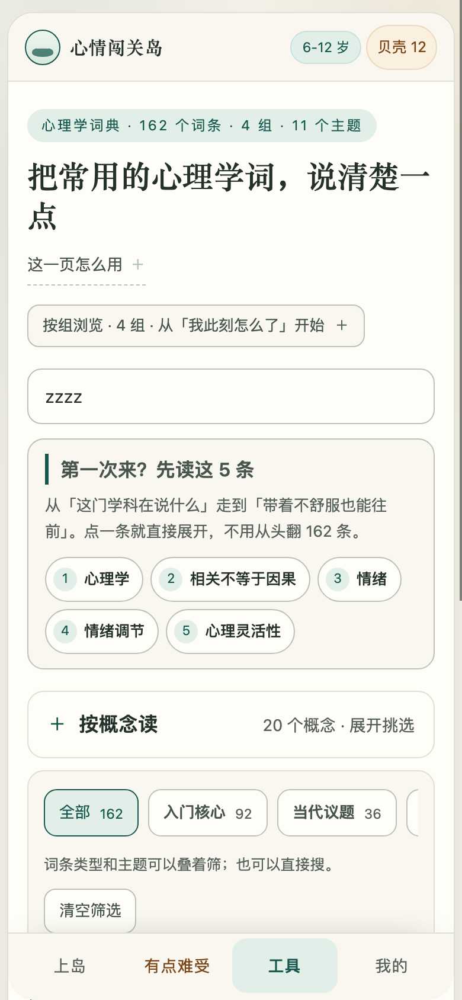
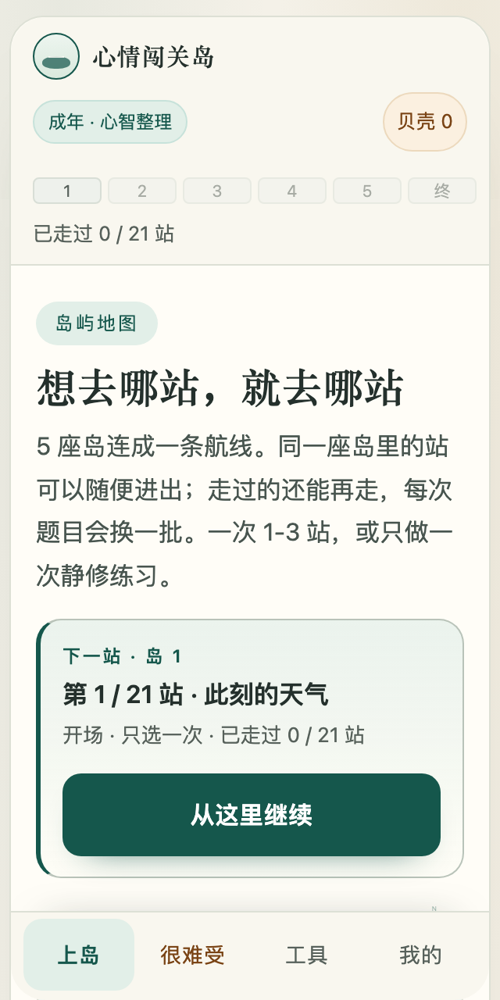
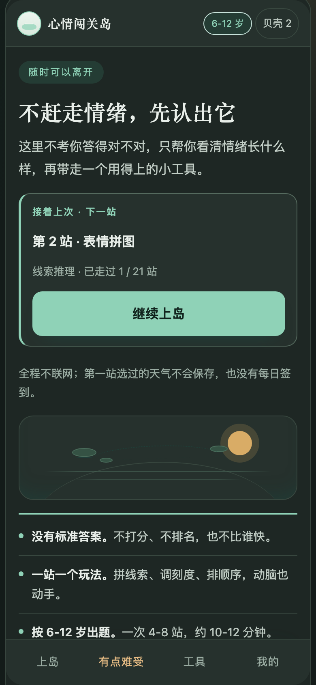

Product & UX Review · v1.2.0
心情闯关岛：产品完成度与用户体验审查
审查对象 1.2.0（commit 46796da，导航收口版） · 审查日期 2026-11-26 ·
范围 核心功能 / 关键流程 / 交互一致性 / 边界与错误 / 性能 / 可访问性 · 未改动任何应用代码
工程水位和边界意识明显高于同类个人项目；这一轮的问题不在「缺功能」，而在几处会直接影响第一印象的完成态、首次加载和状态表达。
功能面已经相当完整：4 个年龄档、2 条轨各 21 站、13 种题型 + 终章、162 条词典、31 张工具卡、静修间与工作间支线、导出导入、PWA 离线，且 164 项浏览器用例 + 45 项一致性检查全绿。安全出口、错误兜底、存档迁移这些「不容易被看见」的地方做得比大多数产品扎实。
真正的短板集中在三处：通关后原题还留在屏幕上、主按钮变成点不动的「死按钮」；弱网首次打开要 14.6 秒；页面切换不播报、选中状态只靠颜色。这三件事分别伤害「第一次玩完一关」「第一次打开」「第一次用读屏」，恰好都在第一印象上。
先修完成态通关后把题目收起来或整体禁用，别让「就这样出发」看起来还能点。
再修首次加载托管层开压缩 + 合并首屏脚本，14.6s 可以降到 5s 以内。
补状态表达路由切换播报、选中项 aria-pressed，让读屏用户知道「到哪了」「选了什么」。
评分说明：以「同类个人项目」为参照，不以商业儿童教育产品为基准；90 分代表「可以直接交付」，60 分代表「能用但会明显掉链子」。
01结论与评分
| 核心功能完整性 |
|
90 |
13 种题型全部可渲染、可完成；两条轨、四个档、五座岛的数据都齐；导出导入、PWA、急救、词典、工具箱、慢变量、静修、工作间都在。 |
| 关键流程顺畅性 |
|
74 |
选档 → 首页 → 地图 → 关卡 → 结果 → 下一站，主链路通；扣分在完成态残留、设置弹窗过长、词典搜索无空状态。 |
| 界面交互一致性 |
|
78 |
底栏 + 抽屉收口后层级清楚；仍有首页无高亮、弹窗四种关闭说法、筛选器横滑与换行混用。 |
| 边界与错误处理 |
|
86 |
全局错误页、坏 hash 降级、SW 失败提示、多标签冲突、导入校验与撤销都在；唯一明显缺口是坏存档静默重置。 |
| 性能表现 |
|
62 |
缓存后极快（词典渲染 35ms）；但首次 39 个请求 / 705KB、无压缩，400kbps 下 14.6s 才能选档。 |
| 可访问性 |
|
76 |
对比度 5.99–7.68、焦点环 3px、焦点陷阱、Esc、reduced-motion、forced-colors 都到位；缺路由播报与选中态语义。 |
综合 78 / 100。分数不是目的——下面 17 条里，前 4 条修完，三项主观分都会明显上移。
02核心流程走查
按真实路径走了一遍：首次进入 → 选档 → 首页 → 地图 → 关卡 → 通关 → 工具 / 我的抽屉 → 设置 → 词典搜索。下面六张是 390×844 真视口截图，另附窄屏与深色两张对照；问题标注在对应小节里。

① 首次进入 · 选档四张卡各约 270px，整页 1646px；第一屏只能看到 1.5 个选项，后两张的「点这里进去」在折叠线以下。

② 首页只留「现在该干什么」：一张下一站卡 + 一个主按钮。层级干净，首屏 1002px，主按钮在折叠线以上。

③ 地图五岛航线 + 下一站卡；同一座岛内可自由进出。整页 3019px，首屏能看到岛 1，比 1.1.0 的 4357px 明显收短。

④ 通关结果结果卡出现在题目下方：上面的天气选项和「就这样出发」仍在，按钮还亮着，但再点已经不会结算。这是本轮最值得先修的一处。

⑤ 设置年龄段、字号、朗读、动效、存了什么、备份、重来、安装全在一个 88vh 的滚动区里；「备份与迁移」「清空」要多滚约 1086px 才看得到。

⑥ 词典搜索无结果输入 zzzz 后，搜索框下没有任何提示；「筛出 0 / 162 条」在筛选器下方，起步路径与「按概念读」仍占着首屏。

320px 地图顶栏因换行变成三行（159px），加上底栏 57px，占掉 34% 的视口。

深色模式配色完整、对比正常，不是简单反色；但缺少自动化的对比度断言（F16）。
03问题清单
P1 = 影响核心体验或可访问性，建议下一版必修；P2 = 明显影响效率或一致性；P3 = 打磨项。每条都给了可定位的证据与改法。
P1 · 四条，建议下一版必修
P1F1 通关后原题仍在，主按钮变成「死按钮」views-level.js:468 · actions-level.js:189
影响结果卡被追加在题目下方，上面的选项和「就这样出发」原样保留。用户点完一次后看到结果，再点一次按钮没有任何反应（play.done 挡住了结算），会怀疑「是不是没点上」。这是所有人玩到的第一关，也是第一印象。
证据实测 1-1：通关后 document.querySelector('[data-action="weather-go"]:not([disabled])') 仍为真；再点一次，state.shells 与 state.cleared 不变、结果卡仍为 1 张——说明重复结算被挡住了，但按钮没有给出任何「已完成」的反馈。根因：paintResultCard() 只清空了 #level-actions（views-level.js:468-469），而 weather 的按钮在 .play-area 里（views-level.js:48），不在那个容器内。
建议在 paintResultCard() 里统一处理完成态：把 #stage .play-area 折叠成一行「这一题的作答已收起」，或给其中所有 [data-action] 加 disabled + aria-disabled；weather-go 文案改为「已完成 · 去下一站」。更彻底的做法是完成时用结果卡替换 .play-area，让「答题区」和「结果区」不同时存在。同时把 F15 的悬空分隔符一起收掉。
P1F2 弱网首次打开 14.6 秒，39 个请求 / 705KBindex.html · scripts/serve.mjs
影响PWA 二次访问很快（Service Worker 缓存后几乎瞬时），但第一次打开要等十几秒。家长在手机流量下点开一个「小游戏」，很可能在选档页出现前就退出。
证据CDP 真视口 390×844、禁用缓存、400kbps / 150ms RTT：首字节 151ms，顶栏 3.85s 出现，选档页可用 14.6s；39 个资源、解码 705KB，其中 35 个 JS（573KB）+ 1 个 CSS（112KB）。本机 serve.mjs 不做压缩；同一批文件 gzip 后合计 239KB（-65%）。若托管方开启 gzip，理论值约 5s，仍是可感知的等待。
建议分三步，成本从低到高：① 托管层开 Brotli/gzip（零代码，立省 65%）；② 构建期 minify CSS/JS（再省 10–15%）；③ 把 21 个 content/*.js 合并成 3–5 个包（按「首屏必需 / 词典 / 工具 / 题库」切），首屏只加载 bands + core + shell + views-main，其余在进入对应视图时再注入。③ 会牵动 README 的加载顺序契约与 doctor 的清单断言，建议单独开一个版本做。过渡期至少给 #stage 一个骨架屏，别让用户对着空白等。
P1F3 切屏不播报、焦点不移动、标题不变views-main.js:37/219 · shell.js:routeTo
影响读屏或键盘用户点底栏「上岛」后，页面内容已经换了，但焦点还停在那个 tab 上，没有播报，浏览器标签页标题也始终是同一句。用户只能靠重新探索确认「我到底到哪了」。
证据stage.focus() 只出现在关卡（views-level.js:318）、词典（views-dictionary.js:143）、静修（views-retreat.js:50/104）三处；renderHome（views-main.js:37）、renderMap（:219）、renderAgeGate（:12）、自助工具箱、慢变量都没有。全仓没有对 document.title 的赋值。
建议在 routeTo() 的统一出口做三件事：stage.focus({preventScroll:true})；一个 aria-live="polite" 的路由播报（「已到地图，5 座岛，已走过 3 / 21 站」）；按视图设置 document.title（关卡带站名，如「第 3 站 · 情绪温度计 · 心情闯关岛」）。注意别让播报和 #feedback-slot 的 live region 抢话。
P1F4 选中状态只靠颜色，没有语义ui.js:279-294 · actions-level.js:189
影响读屏用户听到的是一串普通按钮，不知道哪个是当前字号、朗读开关是开还是关；色觉障碍用户只能靠底色深浅猜。设置页最严重——它决定了整个应用的显示方式。
证据全仓只有急救页的「给感受一个词」设了 aria-pressed（actions-level.js:152）。设置里的年龄段 / 字号 / 朗读 / 动效 / 高对比全部是 class="on"（ui.js:279-294）；weather-pick、pair-left、persp-left、compose-pick、decor-toggle 同样只切 class。实测设置弹窗 12 个 .seg button，aria-pressed 全为 null。
建议抽一个 seg() 渲染件统一处理：选中项 aria-pressed="true"，或整组改成 role="radiogroup" + role="radio" + aria-checked；视觉上加一个勾或左侧竖条，不要只靠底色。题目选项（天气 / 配对 / 拼句）用 aria-pressed 即可，代价很小。
P2 · 九条，建议排在 P1 之后
P2F5 词典搜索没有空状态，计数离输入框太远views-dictionary.js:111/291
影响搜不到时，用户分不清「没有这个词」还是「搜索坏了」；首屏仍被「第一次来？先读这 5 条」「按概念读」占满，会误以为筛选没生效。
证据输入 zzzz 后 #dict-count 文本为「筛出 0 / 162 条 · 「zzzz」」，但它在筛选器下方（截图中不可见）；搜索框下没有任何 role="status" 提示，也没有「清空」入口。
建议搜索框正下方加一行 live 提示：「没有找到「zzzz」。试试更短的关键词，或换个说法」+ 清空按钮；命中时显示「找到 7 条」并把计数上移；0 结果时隐藏起步路径与「按概念读」，让空状态成为首屏唯一内容。
P2F6 设置弹窗过长，换档会把人「踢」到地图ui.js:267-320 · actions-data.js:30
影响导出、清空、安装这些低频但重要的操作被埋在 1500px 以下；误触年龄段会立刻关闭弹窗并跳到地图，用户还没反应过来。
证据一个 .modal 里放了 7 组内容（年龄段 + 长说明、字号、朗读、动效、存了什么、备份与迁移、重来、安装）；390×844 下弹窗可视高 743px、内容高 1829px，要多滚约 1086px 才能看到「备份与迁移」。换档按钮写死 data-next="map"（ui.js:280），set-band 直接 renderMap()（actions-data.js:30-31）。
建议拆成「显示」「朗读」「数据与备份」三个二级面板或 <details> 折叠；换档加一句确认（或留在设置页，顶部提示「已切换」）；「清空本机进度」单独放在数据区底部，保持危险色与二次确认。
P2F7 320px 下顶栏 + 底栏吃掉 34% 视口style.css:65-82 · 1143
影响小屏手机上，地图 / 关卡页只有 2/3 的屏幕留给内容；顶栏还因为换行变成三行，档位胶囊被挤到第二行，视觉上像两个标题栏。
证据实测 320×640：地图 / 关卡顶栏 159px + 底栏 57px = 216px（34%）；首页 96 + 57 = 153px（24%）。档位 chip 实测 99×27。原因：#topbar 的 flex-wrap 遇上 .brand{min-width:200px}，320 下品牌与档位换行，进度条再占一行。
建议窄屏（≤360）隐藏 .brand-sub 与档位 tag、把 chip 缩成「6-12」；或干脆把换档入口收进「我的」，顶栏只留品牌 + 贝壳；进度段与「已走过 X / 21 站」并成一行。目标是把地图页顶栏压到 110px 以内。
P2F8 多处触控目标小于 44pxstyle.css · 实测
影响这个应用明确服务 3-6 岁，但顶栏进度段、词典筛选、「想多想一步」都低于 44px；孩子手指粗、精度低，误触率会明显上升。
证据实测：顶栏进度段 56×30；词典筛选 chip 高 39；「想多想一步？」27；关卡工具栏 42；首页档位 chip 27。底栏 tab 46px 达标。
建议统一最小 44×44（至少 40×40）；进度段可以用伪元素扩大热区而不改视觉高度；「想多想一步」改成带 padding 的行内按钮；词典 chip 行高加到 44。
P2F9 首次选档后的第一句话就写错了actions-data.js:22-24
影响第一次选完档，首页提示「已切换到「3-6 岁 · 看图玩」，题目会换一批，进度和词卡都还在」——可这时根本没有「切换」过，也没有进度和词卡。第一句反馈就不准确，会削弱后面所有说明的可信度。
证据set-band 里算了 firstPick，但 session.tip 只有成年 / 非成年两个分支，没有用 firstPick 区分。
建议firstPick ? '已选好「3-6 岁 · 看图玩」。之后在「我的」里随时能改。' : 原文案。一行改动，收益是首次体验的第一句人话。
P2F10 存档损坏时静默回到选档页core.js:259-265
影响JSON 坏掉、被别的脚本写脏、或旧键互相覆盖时，load() 直接返回默认状态，用户看到的是「怎么让我重新选年龄」，进度像凭空消失，也不知道还能导入备份。
证据readRaw() 会依次尝试 v5 / v4 / v3 / v2，全坏时 load() 的 catch 直接 clone(DEFAULT_STATE)，没有任何提示或备份。
建议在 load() 里记一个 recoveredFromCorrupt 标志，首屏顶部提示一次「本机存档读不出来，已从空白开始；如果你有导出的 JSON，可以在设置里导入」；把坏字符串另存到 mood-island-v5-corrupt，别直接覆盖。
P2F11 词典一次性渲染 162 条 / 3343 个节点 / 30977pxviews-dictionary.js
影响桌面 headless 渲染 35ms 看不出问题，但低端机上 3 千多个节点 + 3 万像素的滚动容器会拖慢首次进入和筛选；用户也很难在 162 条里建立位置感。
证据实测 #stage 内 3343 个元素、162 张 .dict-card、页面高 30977px；open-dictionary 同步渲染 35ms（不含样式与布局）。
建议分组默认折叠（现有 4 组 / 11 主题正好是天然的折叠单位），展开时再渲染该组；或给 .dict-card 加 content-visibility:auto; contain-intrinsic-size: 120px；搜索命中时只渲染命中的组。
P2F12 选档页 1646px，第一屏只看到 1.5 个选项views-main.js:12
影响首次进入要先滚过两张长卡才能看见后两个年龄段；3-6 岁的孩子无法自己读完这些说明，实际决策者是家长，但家长也要花时间对比四张卡。
证据390×844 实测整页 1646px；四张卡各约 270px，含图标、档名、tag、三行说明、时长与「点这里进去」。
建议卡片默认收成「图标 + 档名 + 一句 + 时长」，点「看看适合谁」展开详情；或窄屏 2×2 宫格（图标 + 档名 + 时长），把长说明移到选中后的确认页。目标是把四档压进一屏。
P2F13 导航与关闭方式的一致性小裂缝shell.js:106 · ui.js:7
影响首页底栏四个 tab 都不高亮，用户不知道自己「在哪」；弹窗关闭有 ×、收起、完成、知道了四种说法，同一件事四种叫法。
证据TAB_OF_VIEW 只映射了 map / level / work / help / dict / selfhelp / slowvars / retreat，没有 home；openModal 固定输出 × 与「收起」，设置弹窗底部又叫「完成」，导入错误叫「知道了」。
建议home: 'map'（首页也算「上岛」）；统一关闭文案为「关闭」，主操作按钮单独命名（「完成」「去下一站」），去掉抽屉里重复的「收起」。
P3 · 四条，打磨项
P3F14 源码注释仍停在旧规模core.js:27 / :136
影响维护者读到「16 个概念」「17 站」会以为内容缩水；doctor 的 45 项一致性检查没覆盖这个文件，所以一直没被拦住。
证据core.js:27「概念层：16 个概念」实际 20；core.js:136「支线进度因此不可能混进 17 站」实际 21。README / glossary / DEVELOPMENT 已在 1.1.0 修正，只剩这里。
建议改成 20 / 21，并把 js/core.js 纳入 doctor 的数字全文扫描（现在只扫 README / index.html / DEVELOPMENT / 部分源码注释）。
P3F15 通关后深度行留下「基础题 ·」views-level.js:460
影响结果卡出现后，深度切换按钮被隐藏，但前面的「基础题 ·」文本还在，页面上留一个没有宾语的悬空分隔符。
证据paintResultCard() 把 .level-depth [data-action="set-depth"] 设为 hidden，没有处理同一行的前缀文本；实测结果页文本含「基础题 · | 上岛前…」。
建议完成时把整个 .level-depth 一起隐藏，或把前缀改成「这一站 · 已完成」。
P3F16 深色主题没有对比度断言scripts/check-consistency.mjs
影响浅色主题的 ink-3 / warm 有 ≥4.5:1 的自动检查，深色主题没有。以后调深色 token 时，可能悄悄掉到 AA 以下。
证据doctor 的对比度断言只取 :root 的浅色 token；深色走 @media (prefers-color-scheme: dark)，未被计算。实测深色正文与背景对比正常（目视 + 抽样），但缺少护栏。
建议把深色 token 也抽成可解析的一组值，跑同样的 4.5:1 断言；顺手把 .tab 与 .muted 纳入。
P3F17 数字键快捷键没有可见提示boot.js:114 · views-level.js:172
影响选项有 1–4 的数字徽标，键盘也真的能按，但界面上没有一句「按数字键也能选」，视觉用户不会去试。
证据aria-keyshortcuts 已写在终章与部分选项上，boot.js 的数字键处理也覆盖了 .opt / 梯子档位；但没有可见文案。
建议在首次进入关卡时的提示条里加一句「也可以按数字键 1–4」；或在选项徽标上加 title="按 1 选择"。
04做得好的地方
下面这些不是客套——它们决定了上面那些问题「值得修」而不是「不值得」。
安全出口是真的常驻「很难受」在底栏每一屏都能一次点到，措辞随档位变（孩子看到「有点难受」），急救页不写存档、不记录选择，危机词条还链回了急救入口。
错误兜底覆盖了「不体面」的路径全局 error / unhandledrejection 有可读错误页和两个出口；坏 hash 降级成地图；SW 注册失败有 console.warn；多标签页冲突会提示而不是静默覆盖。
存档迁移是认真做过的v2→v5 逐版迁移、按轨拆词卡、白名单校验、坏键回退、导入前对比 + 一次撤销。大多数个人项目到不了这个水位。
红线守得住零联网、无文字输入框、不打分、不排名；我扫了 help / dictionary 的内容，没有 fetch / XHR / 外链，文案与代码一致。
键盘能完成所有题型13 种题型全是点选式，没有拖拽依赖；Tab、Esc、数字键、3px 焦点环都在。对比度实测 5.99–7.68，reduced-motion 与 forced-colors 都写了。
响应式没有横向溢出320 / 390 / 1280、字号 1.3 倍、深色模式都试过，scrollWidth === innerWidth 全部通过；深色配色完整，不是简单反色。
质量网够密45 项 doctor + 164 项浏览器回归 + 79 项源码断言，npm run verify 全绿；README / CHANGELOG / ROADMAP 的数字口径基本一致（只剩 F14 两处注释）。
file:// 与离线都能用双击 index.html 能完整玩（我实测选档页正常渲染）；http(s) 下 SW 预缓存、断网重载仍能进地图。这是很多 PWA 做不到的。
05修复顺序建议
按「用户感知 ÷ 改动成本」排序。前三项加起来大约是半天到一天的工作量，但能把「第一次玩完一关」的体验拉回正常。
| 顺序 | 做什么 | 对应 | 改动面 |
|---|
| 1 | 统一通关完成态：收起或禁用答题区，去掉悬空分隔符 | F1 + F15 | 小 |
| 2 | 首次选档文案加 firstPick 分支 | F9 | 极小 |
| 3 | 路由统一 focus + 播报 + document.title | F3 | 中 |
| 4 | 抽 seg()，给所有选中态补 ARIA | F4 | 中 |
| 5 | 托管层开压缩；构建期 minify（先不动加载顺序） | F2 ①② | 小 |
| 6 | 设置拆三块；换档加确认；数据区独立 | F6 | 中 |
| 7 | 词典空状态 + 分组折叠 + 计数上移 | F5 + F11 | 中 |
| 8 | 窄屏顶栏压缩 + 触控目标 ≥44 | F7 + F8 | 中 |
| 9 | 坏档提示 + 备份键 | F10 | 小 |
| 10 | P3 四条一起收 | F14–F17 | 小 |
| 11 | 合并首屏脚本 / 按需加载（单独版本做，牵动顺序契约） | F2 ③ | 大 |
一个判断：不建议把「合并脚本」和「修完成态」放进同一个版本。前者会牵动 README 的加载顺序契约、doctor 的 35 条脚本断言、sw.js 的预缓存清单，是一次结构性改动；后者只需要改渲染层。混在一起，回归失败时很难判断是哪边引起的。
06方法与局限
- 代码通读：js/ 下 14 个逻辑文件、index.html、sw.js、style.css 关键段、scripts/ 的检查脚本；未逐条读 162 条词典正文与 155 组题库文案。
- 运行时取证：headless Chrome 157 + CDP，真视口 390×844（DPR 2）/ 320×640 / 1280×900，截图 20+ 张；交互探针覆盖弹窗焦点陷阱、Esc、Tab 循环、浏览器后退、未解锁深链、损坏存档、导入错误、0 结果搜索、重复结算、字号 1.3 倍、深色模式、离线重载。
- 性能测量：本机
serve.mjs（无压缩）+ CDP 限速 400kbps / 150ms RTT。这个数字代表「最坏的静态托管」，不代表开了 gzip 的 CDN；两者都写进了 F2。
- 可访问性：DOM / ARIA 检查、对比度计算、纯键盘走查。未在 VoiceOver / TalkBack 真机上听读屏，也未做色觉模拟；结论以代码与 DOM 为准。
- 不在本轮范围：内容适龄性与事实准确性（1.1.0 报告已覆盖）、真人可用性测试、真实低端机帧率。应用代码一行未改，本报告与截图是唯一新增物。